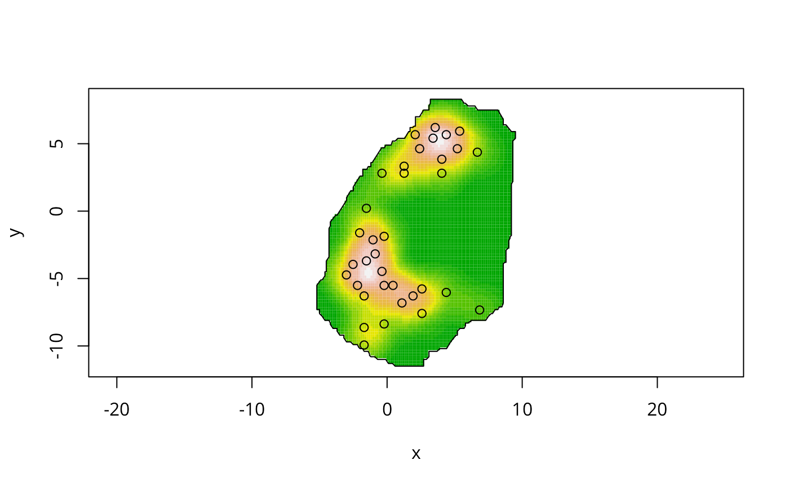
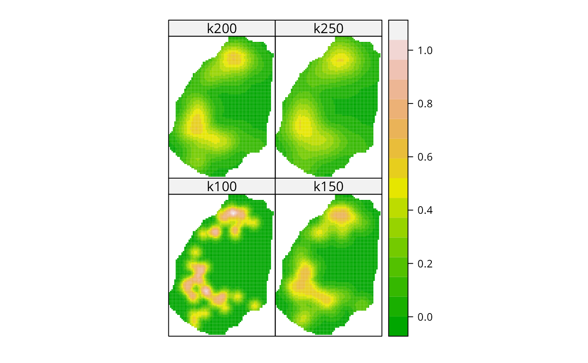

kernel2d.RdPerform kernel smoothing of a point pattern
kernel2d(pts,poly,h0,nx=20,ny=20,kernel='quartic',quiet=FALSE)
spkernel2d(pts, poly, h0, grd, kernel = "quartic")A points data set, or in function spkernel2d an object with a coordinates method from the sp package
A splancs polygon data set
The kernel width parameter
Number of points along the x-axis of the returned grid.
Number of points along the y-axis of the returned grid.
Type of kernel function to use. Currently only the quartic kernel is implemented.
If TRUE, no debugging output is printed.
a GridTopology object from the sp package
kernel2d returns a list with the following components:
List of x-coordinates at which the kernel function has been evaluated.
List of y-coordinates at which the kernel function has been evaluated.
A matrix of dimension nx by ny containing the value of
the kernel function.
containing the values input to kernel2d
spkernel2d returns a numeric vector with the value of the kernel function stored in the order required by sp package SpatialGridDataFrame objects
The kernel estimate, with a correction for edge effects, is computed for
a grid of points that span the
input polygon. The kernel function for points in the grid that are outside the polygon are returned
as NA's.
The output list is in a format that can be read into image() directly,
for display and superposition onto other plots.
Berman M. and Diggle P.J. (1989) Estimating Weighted Integrals of the Second-Order Intensity of Spatial Point Patterns. J. R. Statist Soc B51 81-92; Rowlingson, B. and Diggle, P. 1993 Splancs: spatial point pattern analysis code in S-Plus. Computers and Geosciences, 19, 627-655, (Barry Rowlingson ); the original sources can be accessed at: https://www.maths.lancs.ac.uk/~rowlings/Splancs/. See also Bivand, R. and Gebhardt, A. 2000 Implementing functions for spatial statistical analysis using the R language. Journal of Geographical Systems, 2, 307-317.
data(bodmin)
plot(bodmin$poly, asp=1, type="n")
image(kernel2d(as.points(bodmin), bodmin$poly, h0=2, nx=100, ny=100),
add=TRUE, col=terrain.colors(20))
#> Xrange is -5.2 9.5
#> Yrange is -11.5 8.3
#> Doing quartic kernel
pointmap(as.points(bodmin), add=TRUE)
polymap(bodmin$poly, add=TRUE)

bodmin.xy <- coordinates(bodmin[1:2])
apply(bodmin$poly, 2, range)
#> x y
#> [1,] -5.2 -11.5
#> [2,] 9.5 8.3
grd1 <- GridTopology(cellcentre.offset=c(-5.2, -11.5), cellsize=c(0.2, 0.2), cells.dim=c(75,100))
k100 <- spkernel2d(bodmin.xy, bodmin$poly, h0=1, grd1)
k150 <- spkernel2d(bodmin.xy, bodmin$poly, h0=1.5, grd1)
k200 <- spkernel2d(bodmin.xy, bodmin$poly, h0=2, grd1)
k250 <- spkernel2d(bodmin.xy, bodmin$poly, h0=2.5, grd1)
df <- data.frame(k100=k100, k150=k150, k200=k200, k250=k250)
kernels <- SpatialGridDataFrame(grd1, data=df)
spplot(kernels, checkEmptyRC=FALSE, col.regions=terrain.colors(16), cuts=15)
